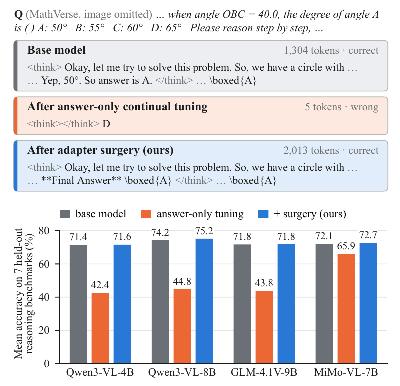

Guarded Adapter Surgery: Repair of Reasoning in Answer-Only Continually Tuned VLMs
Preprint, 2026. Under review.
Vision-language models that reason before answering are often tuned on data with only short answers. After three LoRA tuning stages, four thinking VLMs from three model families leave their think block empty on every held-out problem, and mean accuracy on seven reasoning benchmarks falls by 6 to 29 points. The knowledge is still there; the models have learned to skip the reasoning. Guarded adapter surgery repairs the LoRA adapter at each task boundary by removing the components responsible for the skip, and returns the seven-benchmark mean to the base level on all four models while 71–100% of trained-task answers stay short.
arXiv